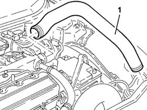
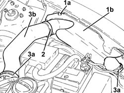
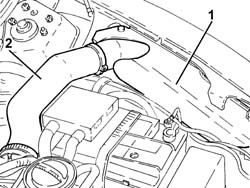
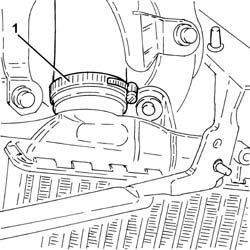

1048B22 air delivery sleeve from heat exchanger to intake manifold - r + r
- Path
- Procedures > 10 ENGINE > 1048 ENGINE AIR SUPPLY CIRCUIT > 1048B pressure air circuit > 1048B22 air delivery sleeve from heat exchanger to intake manifold - r + r
- Kind
- repair procedure (removal / refitting; the operation number is the code)
- Applies to
- engines: 1.9 JTD 8v , 1.9 JTD 16v, 2.4 JTD 10v, 2.4 JTD 20v; all production periods
- Interactive page
- https://sloeber94.github.io/elrnDB-a156/en/#/3237790
Applies to: engines: 1.9 JTD 8v , 2.4 JTD 10v; all production periods
 Removing
Removing
 Refitting
Refitting1. Disconnect and remove the air supply hose from the heat exchanger to the inlet manifold.

Applies to: engines: 1.9 JTD 8v , 2.4 JTD 10v; all production periods
Refitting
RemovingFit the air supply hose from the heat exchanger to the inlet manifold.
Applies to: engines: 1.9 JTD 16v; all production periods
Removing
RefittingProceed with removal 1016A10 sound-proofing cover - r + r .
1. Undo bolts (1a) and remove protection (1b).
2. Release the air supply hose from the heat exchanger to the inlet manifold from the retaining collar.
3. Loosen the bands (3a) and remove the air supply duct from heat exchanger to inlet manifold (3b).

Applies to: engines: 1.9 JTD 16v; all production periods
Refitting
RemovingRefit the air supply duct from heat exchanger to inlet manifold, connect it to the heat exchanger and tighten the relevant bands.
Fit the air supply hose from the heat exchanger to the inlet manifold to the retaining collar.
Place the protection back in its housing and secure it using the bolt.
Proceed with refitting 1016A10 sound-proofing cover - r + r .
Applies to: engines: 2.4 JTD 20v; all production periods
Removing
RefittingProceed with removal 7055A43 central front grille - r r .
Proceed with removal 7055A41 RIGHT FRONT GRILLE - R.R. .
Proceed with removal 7210E10 R.R. FRONT BUMPER .
Proceed with removal 5540B16 FRONT LIGHT CLUSTER with direction indicator (one), left or right - R.R. (Left side).
Proceed with removal 1016A10 sound-proofing cover - r + r .
1. Undo the fixings and remove the protection.
2. Loosen the band and disconnect the air supply duct from heat exchanger to inlet manifold, heat exchanger side.

Applies to: engines: 2.4 JTD 20v; all production periods
1. Loosen the band and disconnect the air supply duct from heat exchanger to inlet manifold, heat exchanger side, and remove it.

Applies to: engines: 2.4 JTD 20v; all production periods
Refitting
RemovingRefit in its seating the air supply duct from heat exchanger to inlet manifold, connect it to the heat exchanger and tighten the relevant band.
Connect the air supply hose from the heat exchanger to the inlet manifold, inlet manifold side, and tighten the band.
Refit the protection in its seatig and tighten the attachments.
Proceed with refitting 1016A10 sound-proofing cover - r + r .
Proceed with the refitting 5540B16 FRONT LIGHT CLUSTER with direction indicator (one), left or right - R.R. (Left side).
Proceed with refitting 7210E10 R.R. FRONT BUMPER .
Proceed with refitting 7055A41 RIGHT FRONT GRILLE - R.R. .
Proceed with refitting 7055A43 central front grille - r r .